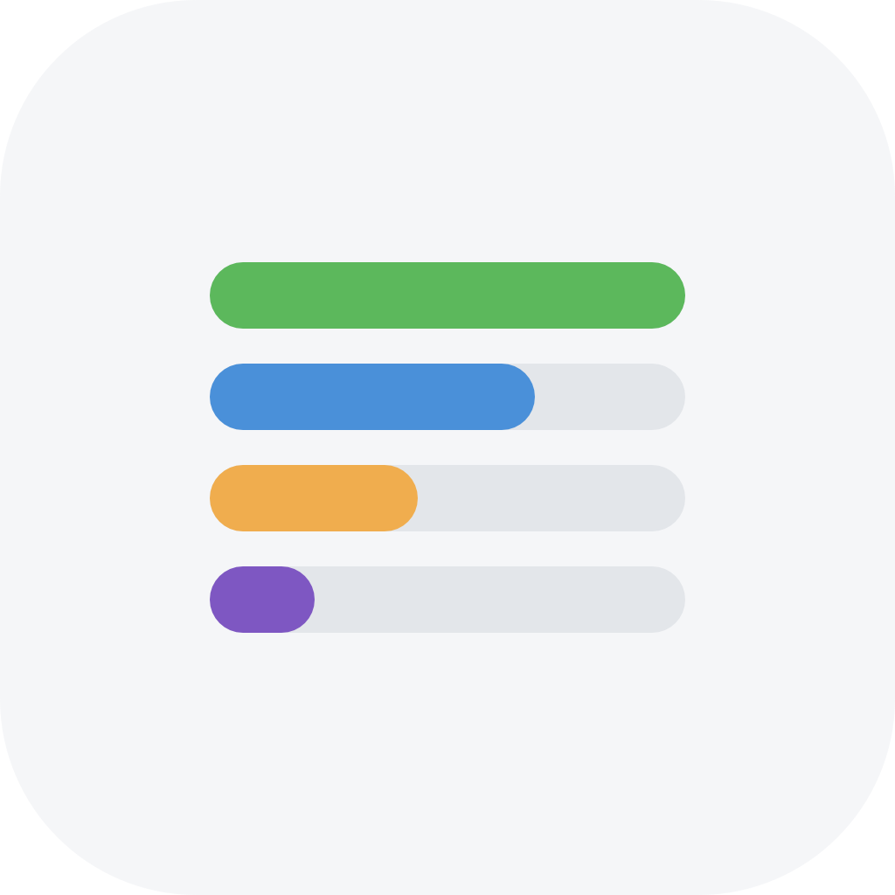

Check your inbox to confirm . Open the link we sent, then sign in.
Loading release notes…
Release notes unavailable.

Feedback sent — thank you!
Lectio —
Loading your Moodle accounts…
No items match that filter.
This semester was updated somewhere else since you opened it. What would you like to do?
Keeping your changes saves a backup of the other version.
These semesters are stored on this computer. Upload copies to your account so they sync to your other devices. Your local copies stay on disk.